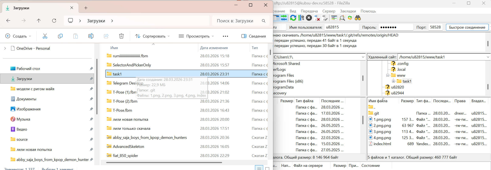

Отчет по заданию 1
Пункт 1: Подключение к серверу kubsu-dev.ru по ssh

Пункт 2: Ping kubsu.ru
Ping - утилита для проверки доступности узла в сети.
Она отправляет небольшие пакеты данных на сервер и замеряет время ответа

Пункт 3: nslookup A и MX
nslookup — утилита для запросов к DNS (системе доменных имён).
A-запись (Address record) — связывает доменное имя с IP-адресом сервера.
MX-запись (Mail Exchange record) — указывает, какой почтовый сервер обрабатывает почту для этого домена.
kubsu.ru

Пункт 4: whois
whois — протокол и утилита для получения информации о домене.
Показывает, кто владелец домена, когда он зарегистрирован, когда истекает срок регистрации.
whois kubsu.ru

Пункт 5: Размещение сайта на сервере

Соединение с сервером через filezilla
С помощью FileZilla скачали файлы с сервера на локальный компьютер.
SFTP (SSH File Transfer Protocol) — защищённый протокол передачи файлов поверх SSH.
